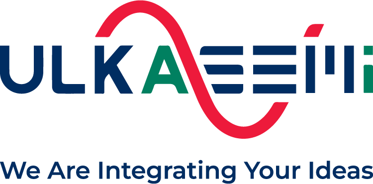

Hello, I'm
Jabid Asraf
ASIC Digital Design Engineer
Experienced in microarchitectural development, digital design, and finite state machine design, with a focus on front-end timing analysis — from RTL to timing closure for custom SoCs.
01. About
I spent 4+ years at Ulkasemi Pvt Limited, growing from Assistant Engineer to Senior Engineer leading digital design work on custom System-on-Chip development — from peripheral IP and bus protocols to SoC integration around Arm Cortex-M subsystems, timing/power closure, and supervising the engineers who build them. I'm now pursuing an MSc in Electronic and Communications Engineering (TU203) at TU Dublin, Grangegorman campus, starting September 2026. I hold a B.Sc in Electrical & Electronic Engineering from Ahsanullah University of Science & Technology.
02. Skills
Digital Design & Verification
Synthesis, Timing & Power
Languages & Scripting
SoC & Embedded
Leadership & Recruiting
03. Experience

Ulkasemi Pvt Limited
Senior Engineer
Jan 2025 — Aug 2026- Supervise a team of engineers and own client project delivery end-to-end.
- Worked on LPDDR6 PHY design, performing timing analysis with Synopsys Fusion Compiler and power analysis with RTL Architect and PrimePower.
- Performed design debug and coverage closure on the LPDDR6 PHY.
- On top of all prior-stage responsibilities below.
Engineer
Jan 2024 — Dec 2024- Designed complex in-house IP blocks for a custom SoC, applying low-power design methodologies and learning coverage closure.
- Lead SoC integration work around Arm Cortex-M subsystems, including the external SRAM controller.
- Advanced scripting for design flow automation and FPGA implementation work.
- Designed and developed MAS (Micro-Architecture Specification) of GPIO, Timer/Counter, RTC, and I2C peripheral IP.
- Learned to use Synopsys Fusion Compiler, Cadence Conformal, and Synopsys Formality.
- Started participating in technical recruitment, training, and university outreach activities.
Assistant Engineer
Feb 2022 — Dec 2023- Built a strong foundation in micro-architecture spec development, FSM design, and debugging using Cadence Xcelium and ModelSim.
- Developed micro-architecture and designed SPI, APB, AHB, and watchdog timer peripheral IP.
- Learned Bash and Tcl scripting alongside class-based functional verification.
- Learned synthesis and static timing analysis, including hands-on use of Synopsys Design Compiler.
04. Recommendations
Having worked closely with Jabid in his capacity as a Senior Engineer, I have had the opportunity to observe his technical skills, dedication, and impactful contributions to our engineering team. Jabid has demonstrated deep expertise in critical areas of digital design, specifically focusing on RTL synthesis and the development of robust timing constraints. He possesses a sharp analytical mind, which makes him exceptionally effective at debugging complex timing issues. On numerous occasions, Jabid identified critical-path bottlenecks and successfully implemented creative solutions to resolve them, ensuring our projects met strict performance and schedule requirements. Beyond his core engineering responsibilities, Jabid has been a key driver of technical innovation within our team. He proactively evaluated and integrated new tools and design methodologies into our existing flows. Change can often be disruptive, but Jabid's leadership and clear communication style made the transition seamless. He mentored team members, created documentation, and provided hands-on support, which greatly accelerated team adoption and improved our overall development efficiency. Jabid is a collaborative team player who brings both technical excellence and a problem-solving mindset to the table. I have no doubt that he will be an invaluable asset to any engineering team he joins.
05. Education
MSc in Electronic and Communications Engineering (TU203)
Sept 2026 — PresentTU Dublin, Grangegorman Campus, Dublin, Ireland
B.Sc in Electrical & Electronic Engineering (EEE)
2016 — 2021Ahsanullah University of Science & Technology, Dhaka, Bangladesh
CGPA: 3.609 / 4.00
Language Proficiency
IELTS Academic — 7.0 Overall
Aug 2024
Duolingo English Test — 120/160
May 2026
06. Projects
Ongoing
Edge AI: ANN Hardware Accelerator for Microcontrollers via SPI Interface
An ASIC-based generalized Artificial Neural Network accelerator for microcontrollers, built with parallel multiplication and accumulation units plus on-chip memory blocks. Enables edge inference for arbitrary ANN architectures, validated against MNIST, Fashion MNIST, CIFAR-10, and CIFAR-100 across multiple layer and neuron configurations.
Undergraduate Thesis
Prospects & Opportunities of Waste-Based Biomass Power Plants near Dhaka City
A comparative study of biomass generation potential from kitchen waste, poultry manure, garden waste, green grass, and fish waste in Bangladesh, identifying which waste streams are most viable for a biomass power plant that could ease both power shortages and waste management challenges near Dhaka.
07. Outreach & Community
As part of Ulkasemi's university outreach program, I visit universities to run seminars and workshops introducing students to industry-level digital design, and to help inspire the next generation of hardware engineers. I've also been invited to sit on panels and pose questions as a judge at student events and competitions.
08. Beyond Work
When I'm not at the bench, I'm usually building small apps, exploring what AI tools can do for hardware scripting and everyday workflows, or out on the field.
09. Contact
Have a role or project in mind? Let's talk.